Class 7 Lecture Demonstration Lab
Spring 2026 | UENV 3200 - CRN 11009 + UURB 3210 - CRN 111008
Why Projections Matter
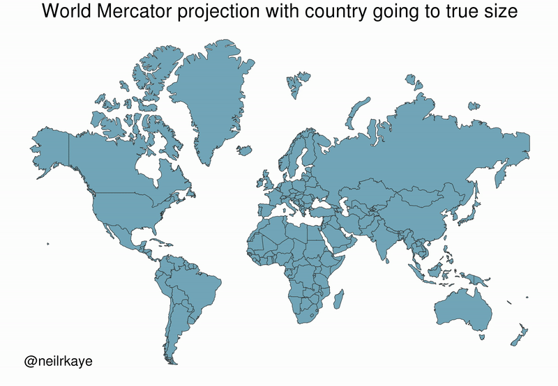
Preamble
Map projections and datums are fundamental to the core framework of GIS systems. While there are many components, mathematical formulas, theories and assumptions in the larger world of geodesy - of which map projections are a part - this week’s demonstration lab and assignment will cover practicalities that face the GIS analyst. As we are working through several typical map projection scenarios, keep in mind the following core principles:
Principle 1:
A map projection is a mathematical formula used to transfer all or part of the curved surface of the earth onto the flat surface of a map.
Principle 2:
Conversion of the spherical coordinates to a Cartesian coordinate system is necessary if we want to accurately measure distances in meaningful units such as meters or feet; or if we want to accurately derive areas of features in our mapping.
Data
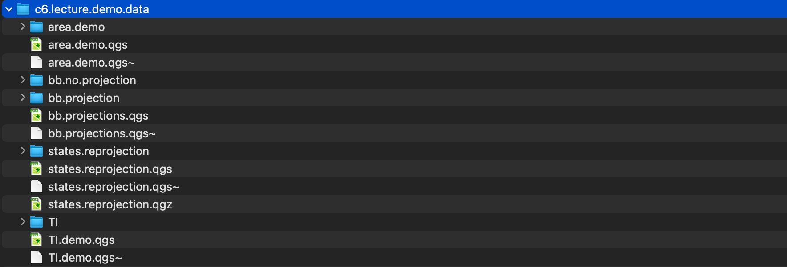
- Demo Lab 1: Tissot’s indicatrix
TI.demo.qgs
- Demo Lab 2: CRS + Missing CRS scenario:
bb.projections.qgs
- Demo Lab 3: Reprojecting Map Layers
states.reprojection.qgs
- Demo Lab 4: CRS + Areal Measurements
area.demo.qgs
The following link will be utilized for the Class 7 Assignment preparation. Herein is the geojson file for Atlanta, GA; as well as the GEE extract raster data for the region in, and surrounding, Atlanta, GA.
Topic 1
Before we start, below are several prompts to ask yourself when choosing a map projection:
What distortion can you give up in favor of the one(s) you really need?
How big is your project area?
What unit of measure (feet, inches, degrees…) would you like your map to be measured in?
What is the typical or common map projection utilized for mapping at/near your project area?
What is the end goal of your project?
Topic 2
CRS within QGIS are organized across several principles:
- First, there is a ‘built-in’ database of 7000+ unique CRS, so there’s a pretty good chance the map projection needed for a project already exists in the system.
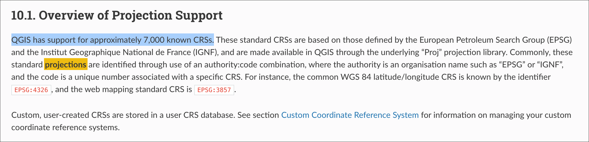
- Second, there are multiple formats by which to attach projection information that QGIS can interpret and operate a CRS:
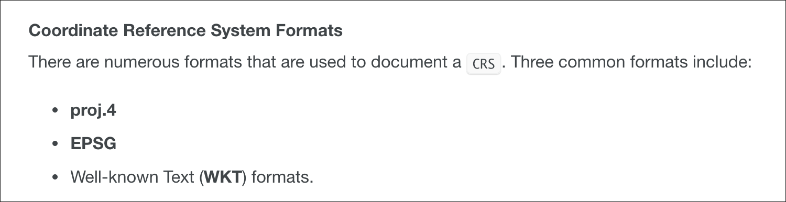
- Third, the QGIS database for CRS closely aligns with the EPSG Lookup Table; and its easy to find the current CRS for both a project and a layer:
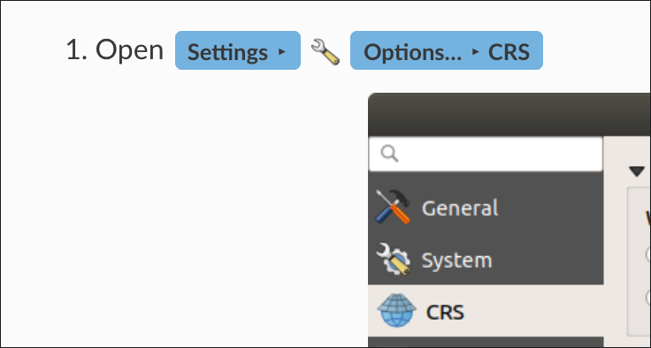
- Fourth, CRS information is easily accessible via the layer properties; and its readily apparent in the TOC when a layer is outright missing CRS information:
- Fifth, The CRS Selector has gone through years of development and is quite mature and user-friendly. It contains 4 core components related to picking the appropriate CRS for a project:
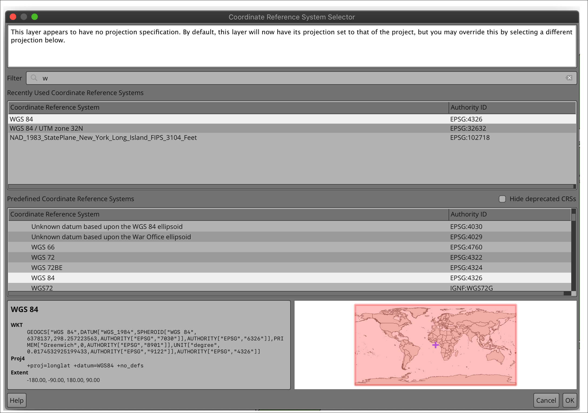
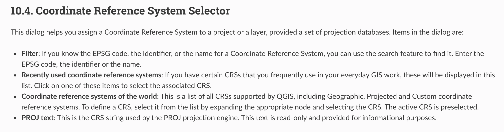
PROJ textStep 1:
Open the Demo Lab 1: Tissot’s indicatrix TI.demo.qgs
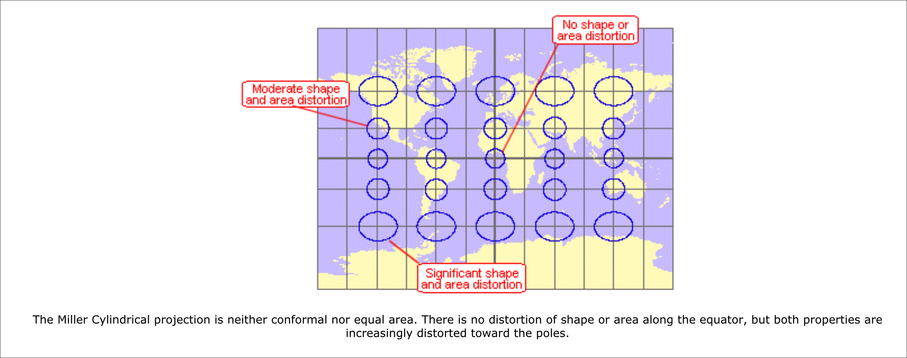
Next, utilize the CRS Selector at lower-right of Map Canvas to transform the current project CRS default WGS84 to ESRI:54021 or World Polyconic:
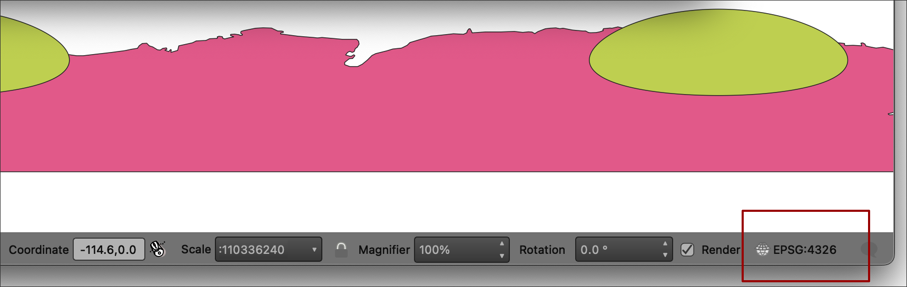
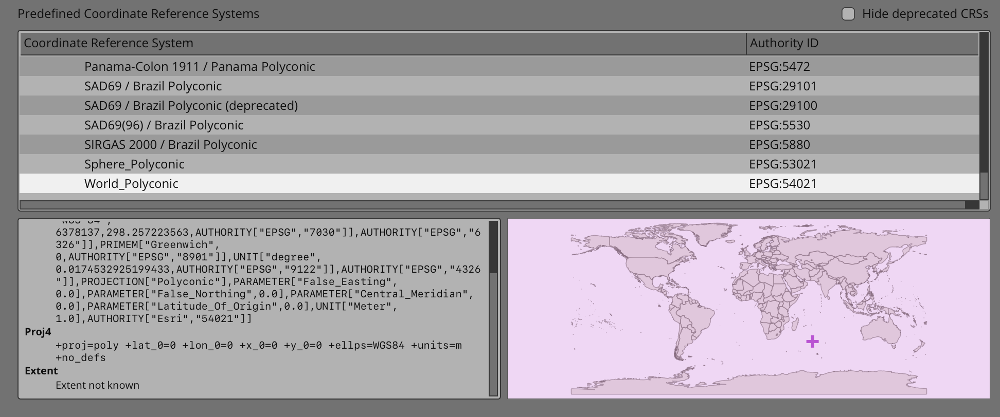
Note the advantages and disadvantages of the World Polyconic projection:
The polyconic projection is not recommended for regional maps. Because there is no distortion along the central meridian, the projection is appropriate for regions of predominant north-south extent. It was used for topographic USGS quad sheets from 1886 until approximately 1957.
Note the Tissot’s indicatrix differences between the QGIS default WGS84 and the World Polyconic CRS:
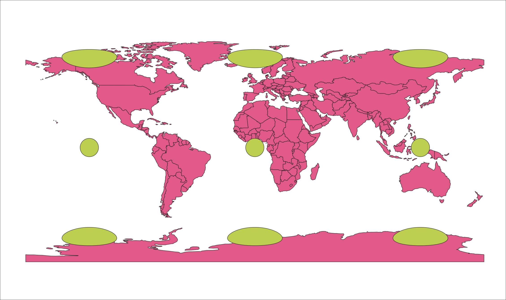
WGS84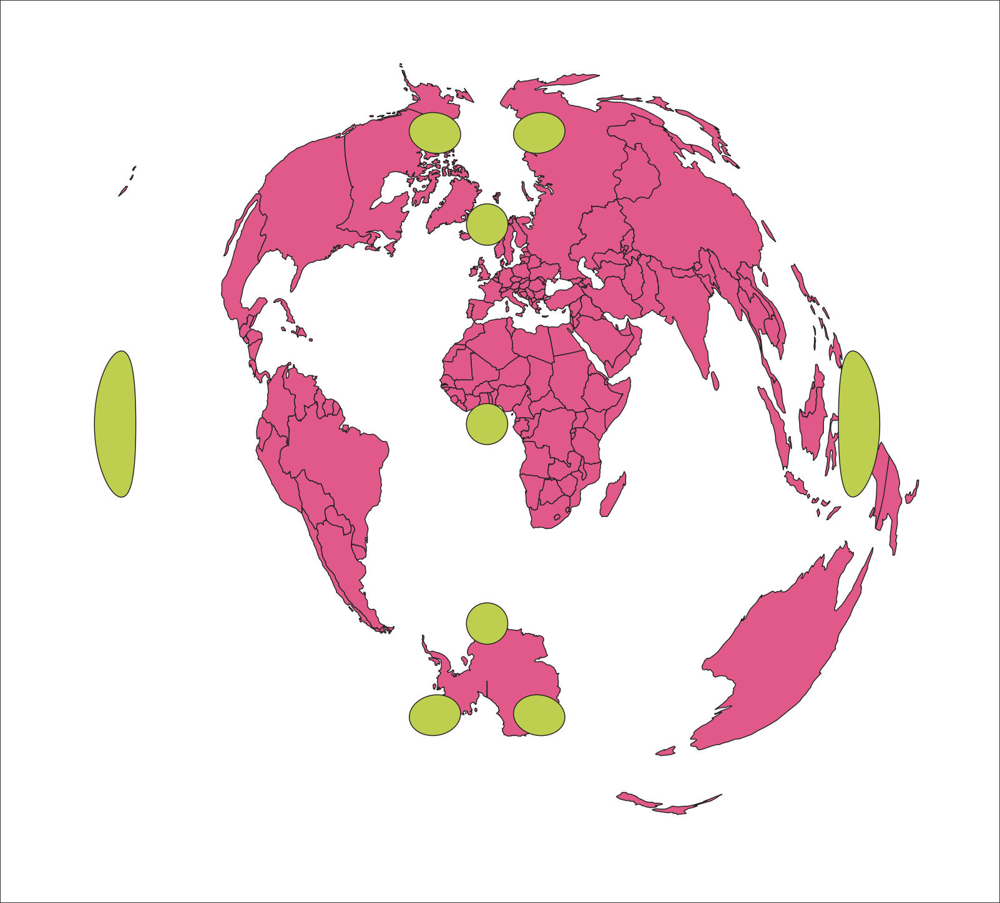
World PolyconicStep 2:
Next, open Demo Lab 2: CRS + Missing CRS scenario bb.projections.qgs
Note the warnings for a layer that does not have proper, or any, CRS information:
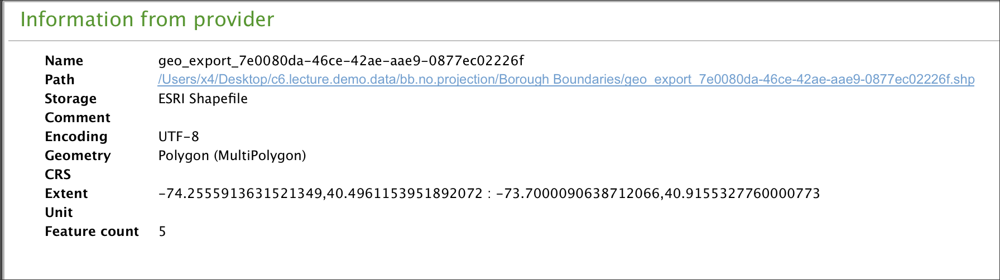
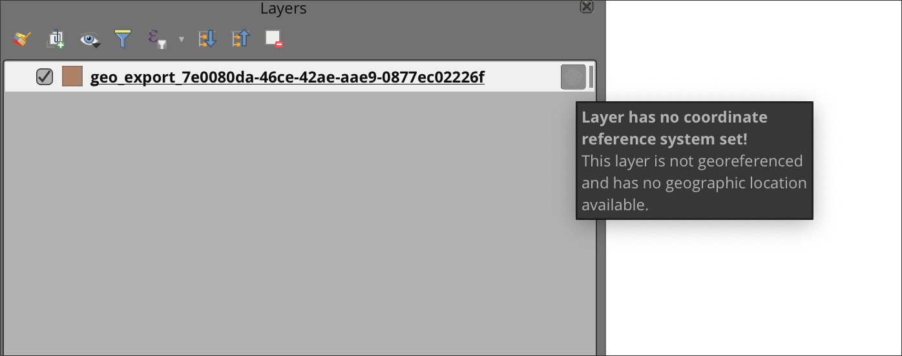
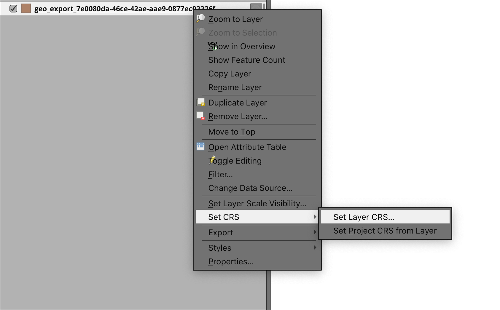
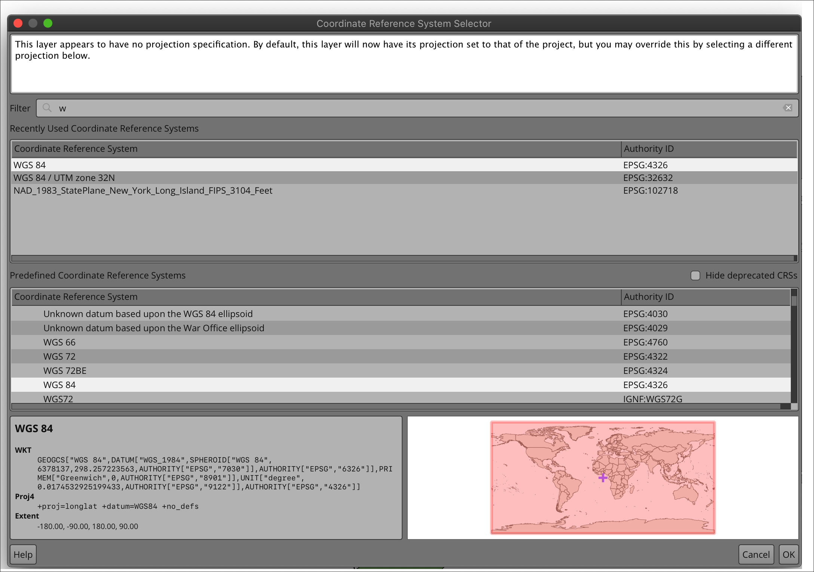
WGS84 to the CRS Selector PanelStep 3:
Next, open Demo Lab 3 states.reprojection.qgs. In order to correctly project data into a specific target CRS, either your data must contain information about its coordinate reference system or you will need to manually assign the correct CRS to the layer. Utilize the Reproject Layer tool for this task:
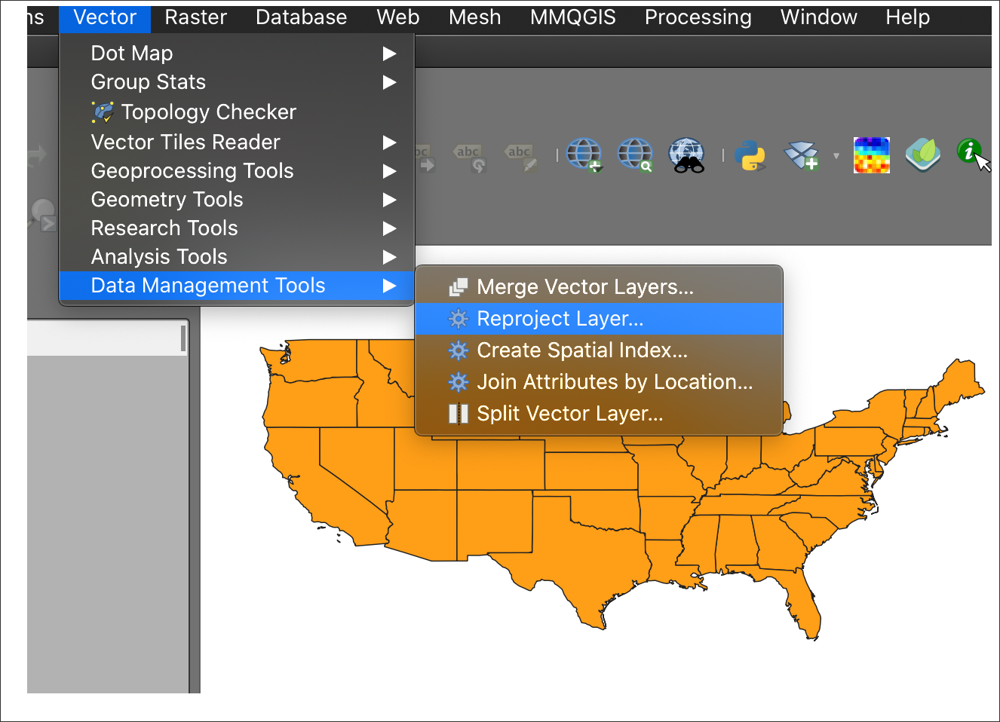
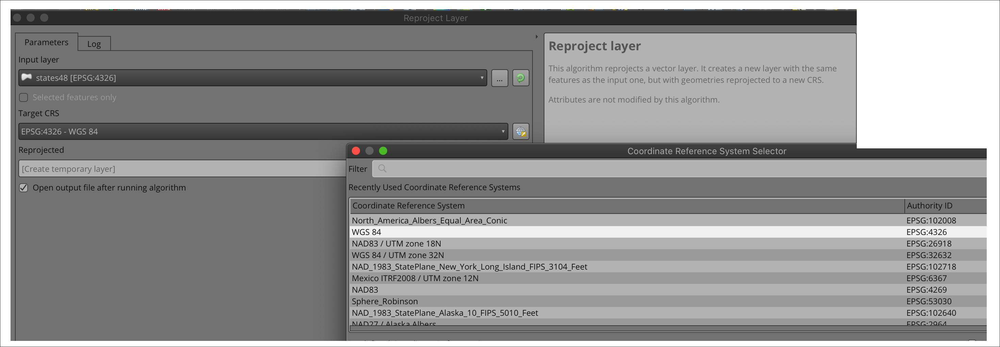
Step 4:
Open Demo Lab 4: CRS + Areal Measurements area.demo.qgs
As default, ESPG 4326 WGS 84 project CRS will be used to calculate areal units via Field Calculator. The Field Calculator will use $area to determine areal calculations in square meters. In the current QGIS LTR, the default areal unit for calculations is indeed square meters unless it is changed to a different unit:
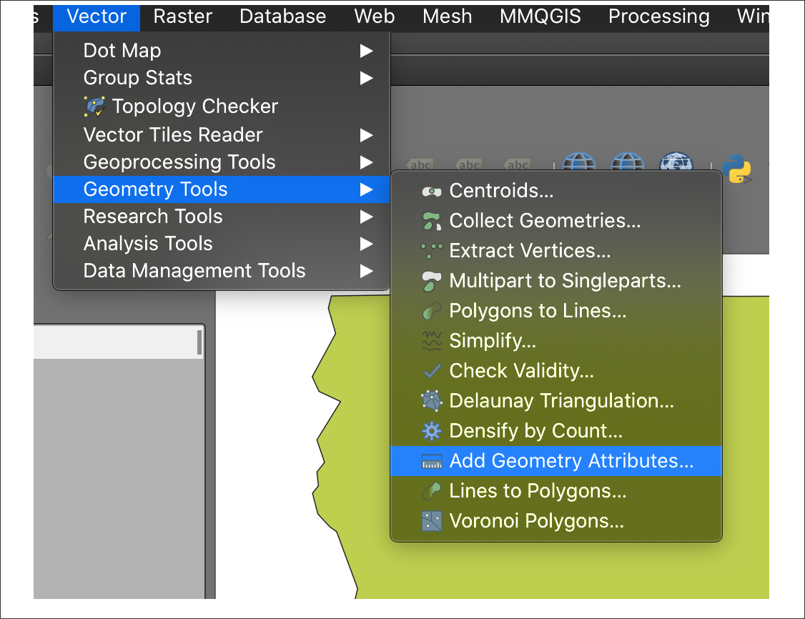
If the Layer CRS is chosen when creating Geometry Attributes, the resulting area calculations will be in degrees based on ESPG 4326 WGS 84 layer and project CRS:
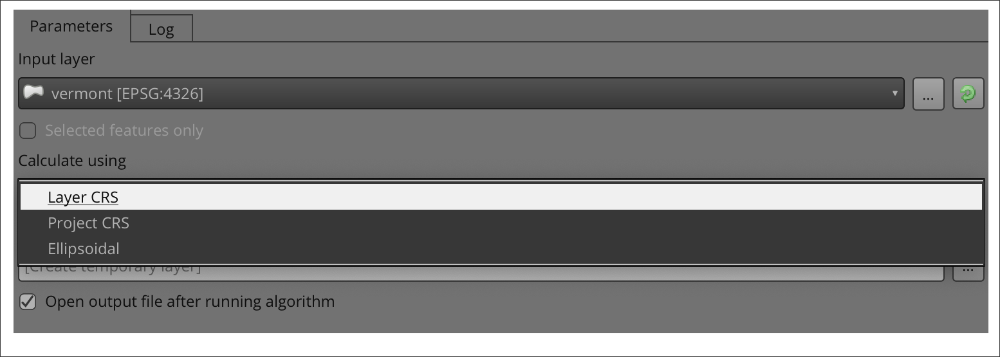
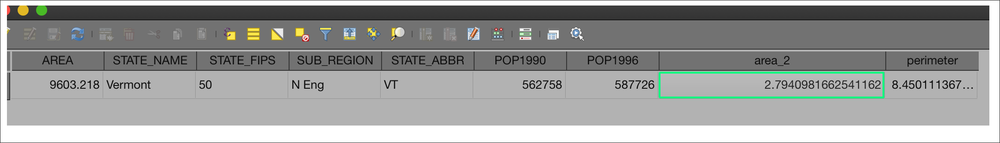
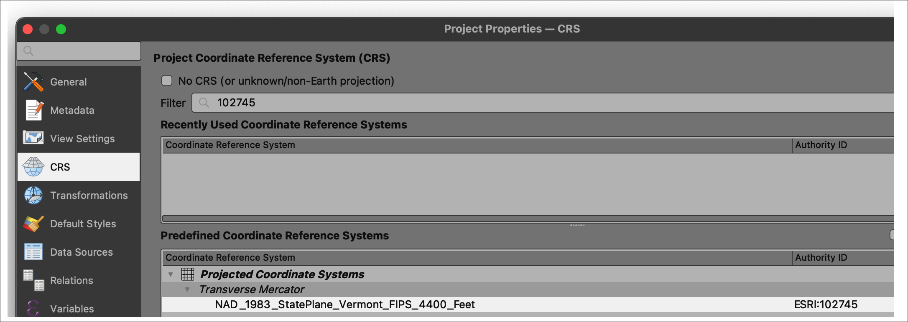
EPSG:102745
ESRI:102745 results in area ins Square MetersSquare Meters and Square Feet can be expressed as Square Miles using the following factors, respectively:
mi² * 0.00000038610
ft² * 0.000000035870
Step 5:
Using the same area.demo.qgs project, set the layer, not the project, to ESRI:102745. As this is done, a Datum Transformation needs to be done by QGIS from the WGS84 Datum to the NAD83 Datum:
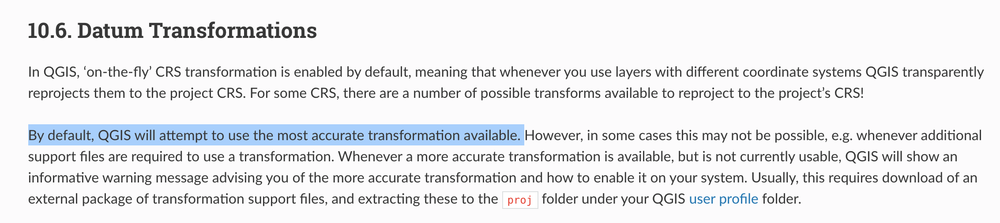
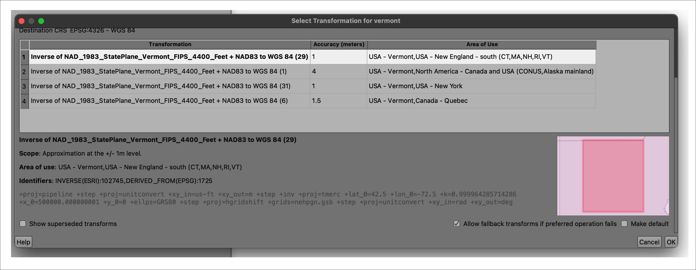
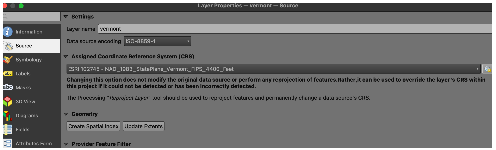
Concluding Remarks
In this sixth demonstration lab, we explored important dimensions of map projections and datums within QGIS. Getting a handle on both the foundational concepts of map projections and the various tools and interfaces within QGIS to manage and transform them is critical to both vector and raster processing. In upcoming assignments and in the final student projects, we will utilize map projections to our benefit in both cartographic and quantitative results.